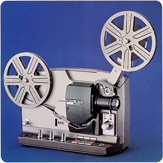
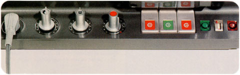
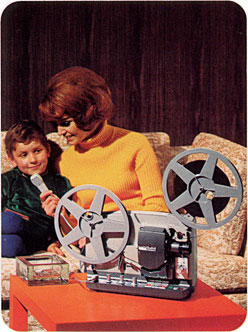

BOLEX SM 8
Super 8mm Projector
1967
- OVERALL DIMENSIONS: 14" x 10" 7"
- WEIGHT: (With lens) 25 lbs.
- CONSTRUCTION: Cast aluminum alloy; Two-tone gray finish; Carrying handle.
- REEL CAPACITY: Accommodates up to 800 ft spools. Top reel arm folds downward for storage.
- THREADING: Fully automatic threading from reel to reel with the Bolex 400ft take-up reel; Automatic threading with manual take-up when other reels of 50-800ft are used.
- POWER: Two versions: 1) 110-125 V, 60 Hz; 2) 110-240 V, 50 Hz
- LAMP: Early models used a 12V/100W quartz iodine bulb (with no dichroic reflector); Later models used a 12V/100W halogen lamp with dichroic reflector. Modern replacement for early models: FCR 12V/100W. Modern replacement for later models: EFP 12V/100W with built-in dichroic reflector.
- LENS: Interchangeable lenses; Originally equipped with a choice of Bolex Hi-Fi f/1.3 fixed focal length lenses (15mm, 20mm and 25mm) or Bolex Hi-Fi f/1.3 14-25mm zoom lens. Later models were often supplied with a Bolex Hi-Fi f/1.3 12-30mm zoom lens.
- VARIABLE SPEED: 18 and 24 frames per second, forward and reverse.

SOUND: Magnetic sound projection and recording; Built-in 2W/15 Ohm speaker; Three (3) audio inputs for recording with individual volume controls for each channel; Tone Control; Variable erasure from 0-100%. Response curve: 50-10,000 Hz at 24fps (-3 db at 60 and 8,500 Hz in comparison with 1,000 Hz) and 50-8,500 Hz at 18fps (-3 db at 60 and 6,500 Hz in comparison with 1,000 Hz). Output channel for external 6 W/5-15 Ohm loudspeaker. Output for amplifier (500 mV/200 Ohm).
OTHER FEATURES: VU meter; Frame counter; Two position lamp brightness control; Framing control for vertical alignment of lens; A table lamp can be attached which switches off when the projector is running and relights again when stopped.- SUPPLIED WITH: (1) Microphone with remote erase and record control, (1) Power cord, (1) 400ft Bolex reel and (1) four-pole plug for connection to an external loudspeaker or amplifier.
Notes and Comments
The SM8 was a magnetic sound projector capable of silent or sound playback of Super 8 film, and allowed audio recording onto magnetic striped Super 8 film. The SM8 was later modified (approximately in 1970) to include a variable level erase head and different lamp. An accessory sound mixing console and external 6-8W/5 Ohm speaker was available separately, for both models.
Early Model
Quartz Iodine Lamp
The original SM8 projector used a 12V/100W quartz iodine lamp and was equipped
with a choice of Paillard-Bolex Hi-Fi f/1.3 fixed focal length lenses of 15mm,
20mm or 25mm; a Paillard f/1.3 14-25mm zoom lens could be purchased at additional
cost. Superimposed sound recording onto film was made possible by an erase
head which reduced 50% of the previously recorded audio track.
Later Model
Halogen Lamp
As of 1970, all models used a 12V/100W halogen lamp with a built-in dichroic
reflector and were usually equipped with a f/1.3 12-30mm zoom lens. (Any of
the earlier lenses could be used, in addition to newer Bolex 23mm f/1.1 and
Lytar 17-30mm f/1.3 lenses). Most significantly, variable erasure from 0-100%
was made possible and allowed for more control in superimposed and dissolved
sound recording.
These later models are easily identified by the three control knobs, rather than two, on the side panel of the projector; the third, marked with a red dot, as shown on this page.
Serial Numbers and Dates of Manufacture
The serial number on SM8 projectors can be used to determine the year in which it was manufactured. The table below lists the range of serial numbers allocated to the production run of both 50 Hz and 60 Hz variations.
| # | Year | ||
|---|---|---|---|
| 100000 | — | 101700 | 1966 |
| 101700 | — | 115450 | 1967 |
| 115450 | — | 119026 | 1968 |
| 119027 | — | 126680 | 1969 |
| 126681 | — | 130000 | 1970 |
| 140001 | — | 143294 | 1970 |
| 143295 | — | 150000 | 1971 |
| 160000 | — | 164323 | 1971 |
| 167001 | — | 178534 | 1972 |
| 178535 | — | 192499 | 1973 |
| 192497 | — | 209490 | 1974 |
| # | Year | ||
|---|---|---|---|
| 130000 | — | 130400 | 1966 |
| 130400 | — | 134100 | 1967 |
| 134100 | — | 134425 | 1968 |
| 134426 | — | 140000 | 1970 |
| 150000 | — | 150650 | 1971 |
| 151051 | — | 151450 | 1972 |
| 151451 | — | 152680 | 1973 |
| 152681 | — | 153525 | 1974 |